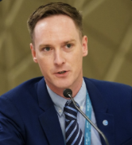

Eric Foster Brinkley

+1 650 241 5184
Summary
Gaming & Esports industry veteran of 20 years and management expert with
experience organizing teams and individuals to optimize their workflow and
guide their creativity in an efficient and cost-effective manner,
generating incredible experiences that bring joy to fans, players, and
viewers around the world.
Education
Masters, Business Administration
- Santa Clara University, Leavey School of Business
- August 2019 to August 2021
Bachelor of Arts - Political Science
- Bachelor of Arts - Political Science
- August 2005 to January 2010
Work Experience
Global Esports Federation
Executive Director, Programs & Content
May 2023 - Present
- Lead the development, growth, and execution of the Global Esports Tour and Global Esports Cups properties from conception through reporting and performance evaluation. Includes but is not limited to budget creation and tracking, P&L reporting, key performance indicator development, marketing direction and positioning, and public-facing communications;
- Spearhead strategic partnerships with AAA and AA game publishers to secure IP rights and provide additional revenue streams to GEF programs and initiatives;
- Champion the development and implementation of programming and streaming best practices including but not limited to: engaging plugins, activities, tools, content development, run of show, content distribution, and platforms;
- Become the key stakeholder in the development and production of partnered or in-house multimedia platform content for the purpose of elevating the GEF brand, the participating athletes, and member federations involved across all properties;
- Leverage experience in esports to determine Global Esports Academy strategic direction and partnerships for athletes, coaches/administration, community, and fans;
- Take lead on new initiatives created to drive the growth of the GEF brand and its positioning with the community, athletes, member federations, committees, strategic partners, and internal stakeholders.
Rally.io
Director, Gaming & Esports Business Development
December 2021 - August 2022
- Corporate Gaming Strategy: Creating and executing Rally.io gaming and esports business strategy in the evergreen web3 industry using analytics and key insights. Establishing buy-in from key internal stakeholders and external investors to further push Rally.io to the forefront of the creator economy.
- New Business Development: Utilizing existing network of gaming creators, agencies, and corporations to generate additional business leads to expand Rally’s presence with key influencers on third party platforms such as Twitch.tv, YouTube, Twitter, Instagram, and TikTok .
- Thought Leadership: Establishing and communicating key best practices and workflows for external and internal market analysis, insights & critical challenges, and execution plans for entering into new markets.
FACEIT Ltd.
Director of Programs
June 2020 to December 2021
- Division Leadership: Co-leading the FACEIT Media organization. Overseeing product management teams, tournament operations team, creative direction team, procurement team, and business development team. Managing eight direct reports across multiple specializations.
- New Business Generation: Identifying and exploiting opportunities within the FACEIT portfolio and calendar to establish new esports and gaming brand properties. Specializing in experimenting with alternative approaches to creative production and tournament operations.
- Program P&L Development: Establishing KPI goals and adjusting revenue and margin targets to accommodate COVID-19 restrictions and client/partner priority and scope changes.
- Client & Partnership Management: Developing and fostering evolving frameworks for long-term partnership development, strategic business negotiations, proposal and budget creation, contract development and execution, game studio esports features integration (Anti-Cheat, tournament platform APIs, in-game credit distribution).
FACEIT Ltd.
Senior Product Manager
May 2019 to June 2020
- Product Creation & Assessment: Developing and evaluating needs of esports properties at every stage of process from conception to execution and post-launch sustainability.
- Project Management: Directing creation and tracking of key milestone deliverables to ensure staff are completing objectives in a timely but efficient and humane way.
- Reporting: Creating and tracking of relevant KPIs to each program, whether through viewership and engagement or sales metrics.
Electronic Arts
Event Producer
January 2017 to April 2019
- Project Management: Managing staff pre-production alignment, driving milestone deliverables, and supporting programming and production of the EA Competitive Gaming Division, Community Engagement Team, and Franchise Marketing strategies for EA game titles.
Skills
- APIs
- Business analysis
- Teamwork
- Google Suite
- Analytics
- Basecamp
- Product Management
- Hive
- Slack
- Microsoft Office Suite
- Analysis Skills
- Dropbox
- Trello
- Pipedrive
- Docusign
- Digital Marketing
- Program Management
- Live Events
- Go To Market Strategy
- Consulting
- Budget Creation
- Budget Management
- Stakeholder Management
- Account Management
Links
LinkedIn